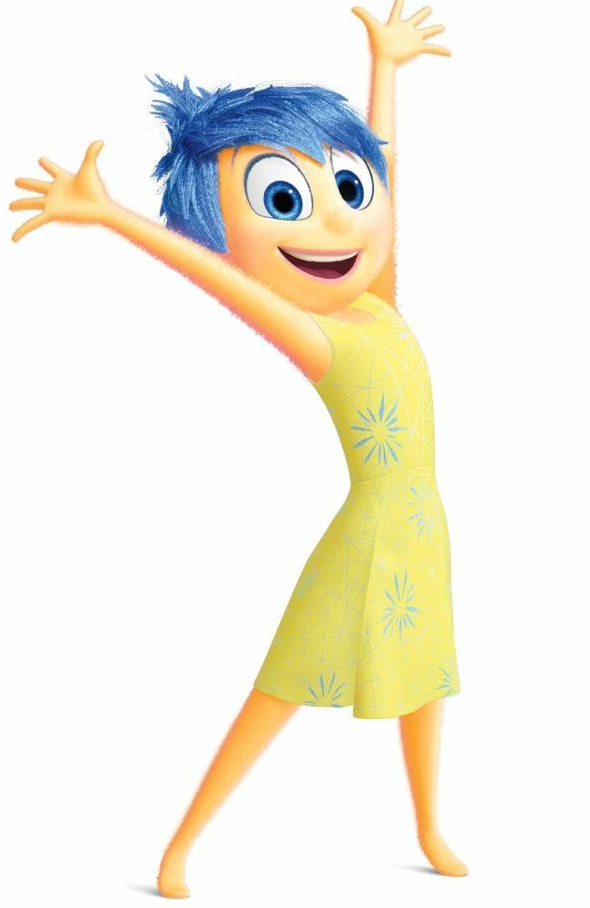
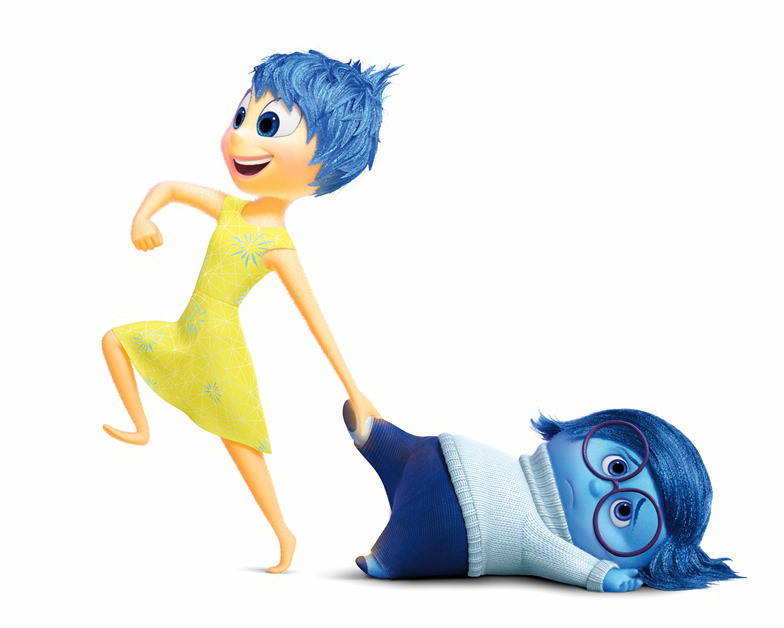
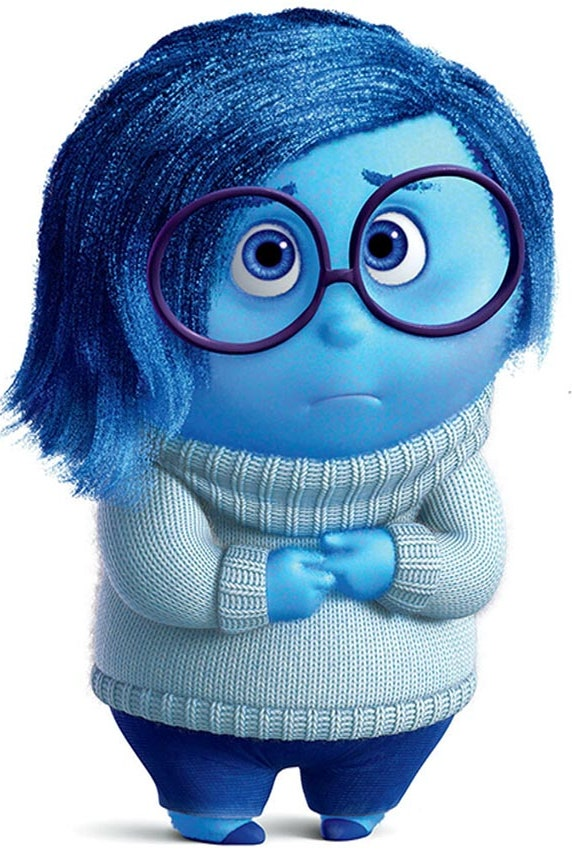
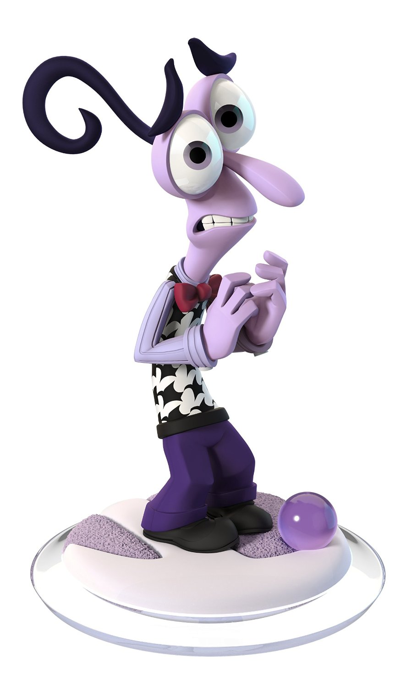
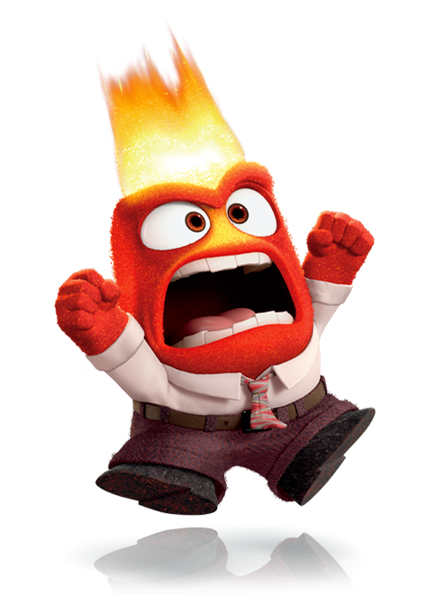
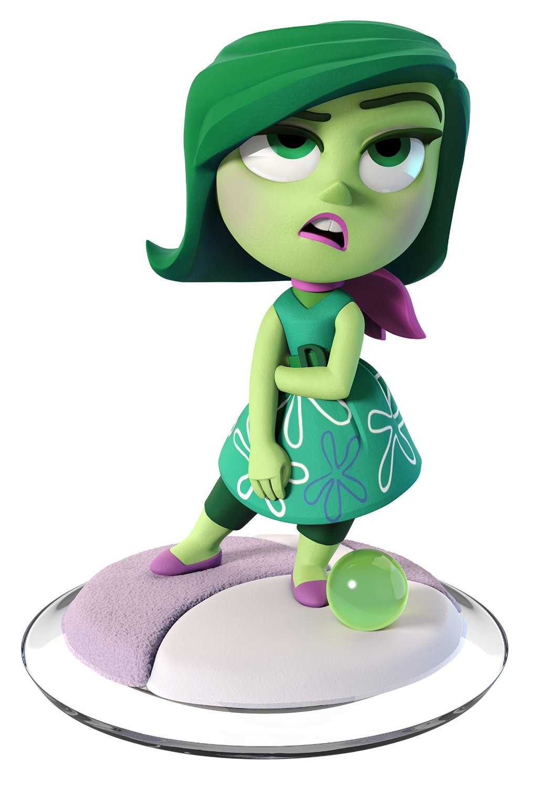
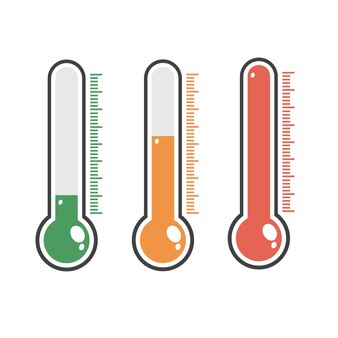

La nostra forza sono le emozioni
Le nostre emozioni influenzano costantemente le nostre scelte, da quelle semplici e banali a quelle per noi più importanti. Anche la scelta di guardare un film in tv spesso è guidata da ciò che proviamo, e a seconda di questo sentire preferiamo guardare un certo genere di film piuttosto che un altro.
Per questo motivo la nostra ricerca del film si basa su criteri più selettivi, in grado di ridurre le opzioni di scelta sulla base proprio delle nostre emozioni! In particolare sono due gli elementi fondamentali: il tipo di emozione suscitata dal film e il livello di impegno che il film richiede per essere seguito.
Per ogni film un emozione
Ti è mai capitato di ripensare ad un film che hai visto e la prima cosa che ti è venuta in mente è la sensazione che quel film ti ha lasciato?
Le battute di Tre uomini e una gamba che ormai conosci a memoria e che ancora ti fanno ridere, le lacrime versate per Hachiko, la sensazione di angoscia quando hai visto Joker, le risate e la tristezza provate guardando La vita è bella...
Quello che sappiamo è che in base al nostro umore, mood in inglese, preferiamo film che richiamano una determinata emozione, che può essere in sintonia o in contrasto con il nostro umore. Alcuni di noi preferiscono guardare un film divertente quando sono giù di morale, altri preferiscono un film commovente che rispecchi il loro stato d'animo.
Su questa base è stato definito il criterio di ricerca mood che trovi nella pagina di ricerca film. All'interno di questa categoria scegliere il tipo di film che vuoi vedere:
- Divertente
-

All'interno della sezione divertente si trovano i film divertenti, film che fanno ridere, che possono andare dal demenziale al satirico. Se cerchi una serata tutta da ridere seleziona la casella divertente nella pagina ricerca film
- Ottimista
-

All'interno della sezione ottimista si trovano i film che inducono nello spettatore sentimenti di speranza, fiducia. In generale questi film possono avere note amare, a volte anche forti, ma si concludono sempre con un lieto fine. Se cerchi una serata con una punta di dolcezza o di speranza seleziona la casella ottimista nella pagina ricerca film
- Commovente
-

All'interno della sezione commovente si trovano i film tristi in grado di far piangere o suscitare sentimenti di tristezza nello spettatore. Se ti senti giù di morale o stai cercando un film in grado di farti commuovere cerca all'interno della categoria commovente nella pagina ricerca film
- Suspense
-

All'interno della sezione suspense si trovano i film di paura, in grado di generare ansia o che creano l'atmosfera di angoscia. Se cerchi una serata da brividi spunta la casella suspense nella pagina ricerca film
- Protesta
-

All'interno della sezione protesta si trovano i film di ribellione, che trattano temi di rivolte sociali, o di vendetta. Allo stesso tempo possono rientrare in questa categoria film che suscitano frustrazione e/o desiderio di riscatto. Se cerchi qualcosa che infiammi la tua serata selezione la casella protesta nella pagina ricerca film
- Trash
-

All'interno della sezione trash si trovano film con scene che provocano disgusto nello spettatore, con scene di violenza e volgarità, oppure film il cui contenuto va in secondo piano e tutto è portato all'estremo in maniera eccessiva e demenziale. Se cerchi l'assurdo e non sei debole di stomaco buttati su trash nella pagina ricerca film
- Sorprendente
-
All'interno della sezione sorprendente si trovano i film dal finale aperto, film che lasciano dubbi o che creano effetto enigma o sorpresa nello spettatore. L'elemento decisivo è l'imprevedibilità di ciò che succede e l'inaspettato. Se vuoi rimanere a bocca aperta scopri i film all'interno della categoria sorprendente nella pagina ricerca film
Per ogni emozione un'intensità
La voce livello di impegno nella pagina ricerca film indica l'intensità dell'emozione suscitata dal film e la complessità della trama.
- Livello Demenziale
- Indica film dall'estrema semplicità e leggerezza, sono l'ideale per una serata senza pensieri. Rientrano in questa categoria: Frankenstein Junior, Ace Ventura l'acchiappanimali, i film dei Monty Python e così via.
- Livello basso
- Indica film leggero, con basso impatto emotivo e che non richiede alcuno sforzo di comprensione. Film adatto a tutti. Questa categoria di film è perfetta per una serata tranquilla in famiglia. Tra i film in questa categoria: Star Wars, Ritorno al futuro, Harry Potter, Il signore degli Anelli.
- Livello medio
- Indica film con medio coinvolgimento. Scelta perfetta se si vuole guardare qualcosa di più impegnativo, senza arrivare a livelli troppo alti. Forrest Gump, V per vendetta, Risvegli, The Truman Show, Matrix sono solo alcuni esempi di film che potrebbero rientrare in questa categoria.
- Livello alto
- Indica film che ha un forte impatto emotivo e può essere molto complesso da seguire. In questa categoria troverete film che sicuramente lasceranno il segno su di voi, volete un esempio? Memento, Se mi lasci ti cancello (lo so, dal titolo non si direbbe), Requiem for a dream... e la lista continua.